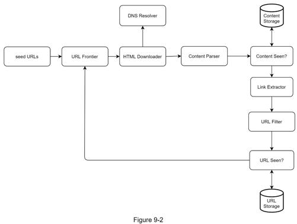
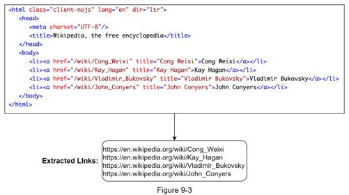
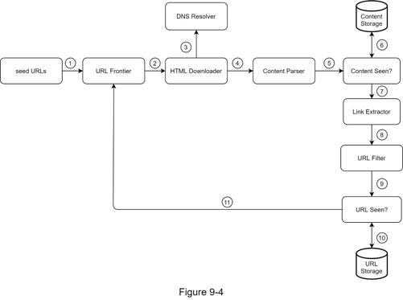

Once the requirements are clear, we move on to the high-level design. Inspired by previous studies on web crawling [4] [5], we propose a high-level design as shown in Figure 9-2.

First, we explore each design component to understand their functionalities. Then, we examine the crawler workflow step-by-step.
Seed URLs
A web crawler uses seed URLs as a starting point for the crawl process. For example, to crawl all web pages from a university’s website, an intuitive way to select seed URLs is to use the university’s domain name.
To crawl the entire web, we need to be creative in selecting seed URLs. A good seed URL serves as a good starting point that a crawler can utilize to traverse as many links as possible. The general strategy is to divide the entire URL space into smaller ones. The first proposed approach is based on locality as different countries may have different popular websites. Another way is to choose seed URLs based on topics; for example, we can divide URL space into shopping, sports, healthcare, etc. Seed URL selection is an open-ended question. You are not expected to give the perfect answer. Just think out loud.
URL Frontier
Most modern web crawlers split the crawl state into two: to be downloaded and already downloaded. The component that stores URLs to be downloaded is called the URL Frontier. You can refer to this as a First-in-First-out (FIFO) queue. For detailed information about the URL Frontier, refer to the deep dive.
HTML Downloader
The HTML downloader downloads web pages from the internet. Those URLs are provided by the URL Frontier.
DNS Resolver
To download a web page, a URL must be translated into an IP address. The HTML Downloader calls the DNS Resolver to get the corresponding IP address for the URL. For instance, URL www.wikipedia.org is converted to IP address 198.35.26.96 as of 3/5/2019.
Content Parser
After a web page is downloaded, it must be parsed and validated because malformed web pages could provoke problems and waste storage space. Implementing a content parser in a crawl server will slow down the crawling process. Thus, the content parser is a separate component.
Content Seen?
Online research [6] reveals that 29% of the web pages are duplicated contents, which may cause the same content to be stored multiple times. We introduce the “Content Seen?” data structure to eliminate data redundancy and shorten processing time. It helps to detect new content previously stored in the system. To compare two HTML documents, we can compare them character by character. However, this method is slow and time-consuming, especially when billions of web pages are involved. An efficient way to accomplish this task is to compare the hash values of the two web pages [7].
Content Storage
It is a storage system for storing HTML content. The choice of storage system depends on factors such as data type, data size, access frequency, life span, etc. Both disk and memory are used.
•Most of the content is stored on disk because the data set is too big to fit in memory.
•Popular content is kept in memory to reduce latency.
URL Extractor
URL Extractor parses and extracts links from HTML pages. Figure 9-3 shows an example of a link extraction process. Relative paths are converted to absolute URLs by adding the “https://en.wikipedia.org” prefix.

URL Filter
The URL filter excludes certain content types, file extensions, error links and URLs in “blacklisted” sites.
URL Seen?
“URL Seen?” is a data structure that keeps track of URLs that are visited before or already in the Frontier. “URL Seen?” helps to avoid adding the same URL multiple times as this can increase server load and cause potential infinite loops.
Bloom filter and hash table are common techniques to implement the “URL Seen?” component. We will not cover the detailed implementation of the bloom filter and hash table here. For more information, refer to the reference materials [4] [8].
URL Storage
URL Storage stores already visited URLs.
So far, we have discussed every system component. Next, we put them together to explain the workflow.
Web crawler workflow
To better explain the workflow step-by-step, sequence numbers are added in the design diagram as shown in Figure 9-4.

Step 1: Add seed URLs to the URL Frontier
Step 2: HTML Downloader fetches a list of URLs from URL Frontier.
Step 3: HTML Downloader gets IP addresses of URLs from DNS resolver and starts downloading.
Step 4: Content Parser parses HTML pages and checks if pages are malformed.
Step 5: After content is parsed and validated, it is passed to the “Content Seen?” component.
Step 6: “Content Seen” component checks if a HTML page is already in the storage.
•If it is in the storage, this means the same content in a different URL has already been processed. In this case, the HTML page is discarded.
•If it is not in the storage, the system has not processed the same content before. The content is passed to Link Extractor.
Step 7: Link extractor extracts links from HTML pages.
Step 8: Extracted links are passed to the URL filter.
Step 9: After links are filtered, they are passed to the “URL Seen?” component.
Step 10: “URL Seen” component checks if a URL is already in the storage, if yes, it is processed before, and nothing needs to be done.
Step 11: If a URL has not been processed before, it is added to the URL Frontier.